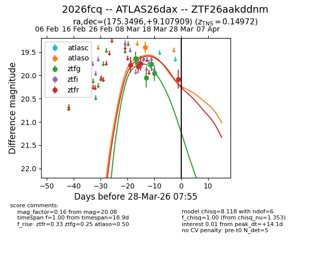
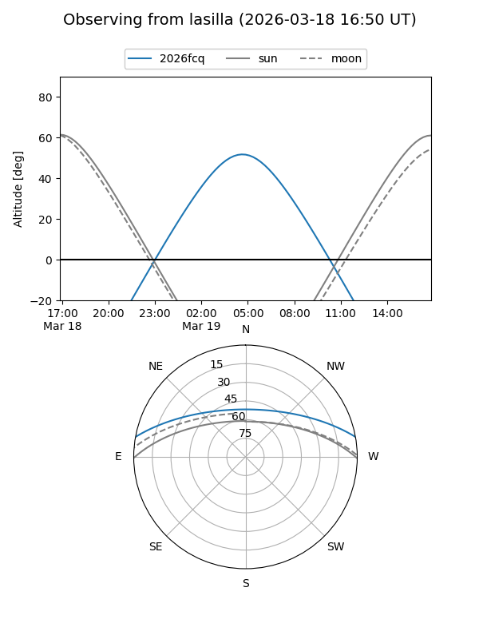
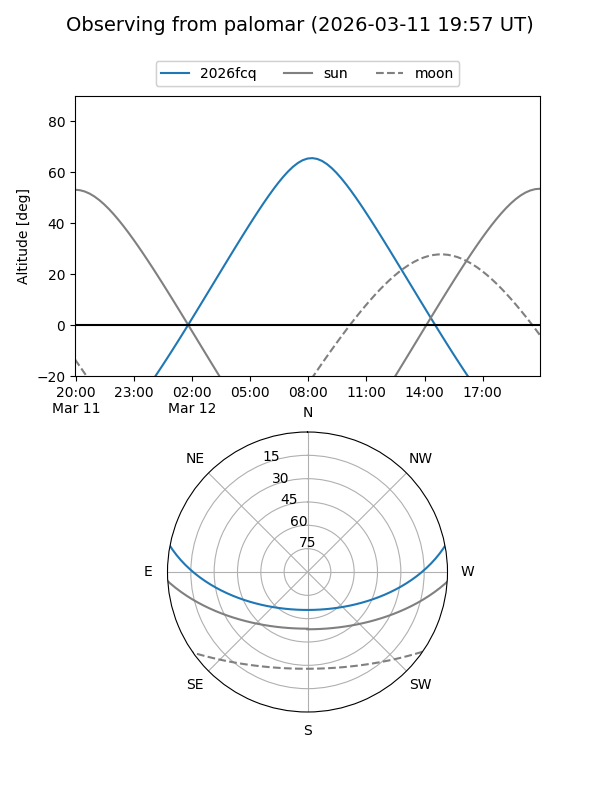
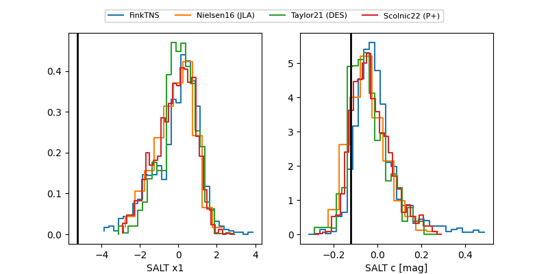

2026fcq
Target 2026fcq at 2026-03-28 07:57
Aliases and brokers:
FINK: link
Lasair: link
ALeRCE: link
TNS: link
YSE: link
alt names
ZTF26aakddnm (ztf,fink_ztf)
2026fcq (tns,yse)
ATLAS26dax (atlas)
Coordinates:
equatorial (ra, dec) = 175.3496,+9.10791
equatorial (HMS+DMS) = 11:41:23.89,+09:06:28.47
galactic (l, b) = (257.0920,+65.53701)
Flags:
confirmed ia
Photometry:
last atlaso=19.40, ztfg=19.95, ztfr=20.08
1 atlaso, 5 ztfg, 4 ztfr detections
Lightcurve

Visibility


Additional plots
